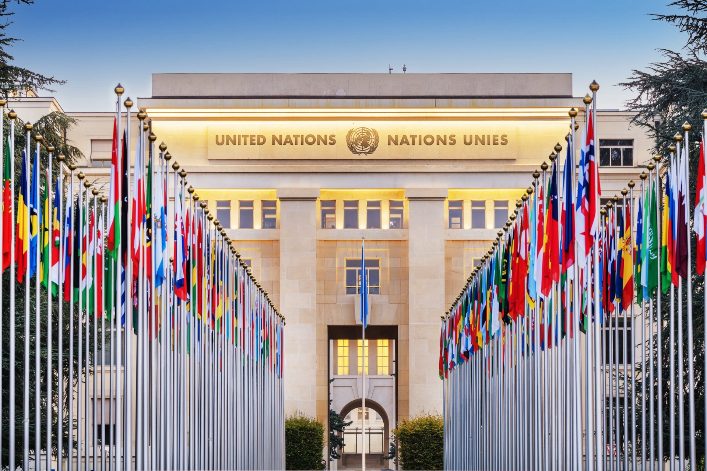

General Assembly Third Committee
Social, humanitarian and cultural affairs. Details announced soon.
NEMUN 2027

This year’s theme
In a diverse global society, the pursuit of justice and equality remains one of the most fundamental aspirations of the international community. The theme “Justice For All: Confronting Inequalities Worldwide” emphasizes the intention of promoting justice and equality for all humans around the world. As we focus on discrimination and conflicts caused by diversity between culture, nationality and self-identification, to secure peace would require member states to participate in diplomatic conversations and mutual discussions.
This theme invites all member states to reflect upon the persistent disparities that continue to undermine human dignity, social justice and sustainable development. Whether economic, social, political or environmental in our nature, these inequalities challenge the principles imprinted in the Charter of the United Nations and the Universal Declaration of Human Rights. As they remind us that true conventional progress depends upon the protection of the rights of all people.
NEMUN 2027, would serve as a valuable platform for constructive dialogue and collaborative solutions. By providing a venue for open exchange and free lobbying, delegates are encouraged to not only examine and identify the root causes of inequality, but also share multilateral pathways that promote fairness, accountability and sustainable growth. We believe through respectful negotiations and the igniting spirit of partnerships, participants could all contribute to the global community, as it approaches these complex challenges that require mutual understanding and commitment to ensure its justice.
With the theme “Justice For All: Confronting Inequalities Worldwide” in our minds, and as all delegates engage in effective conversations and strengthen international frameworks that uphold justice of all differences. Let us ignite sparkles in the darkness and illuminate the path to universal justice.
Committees
Social, humanitarian and cultural affairs. Details announced soon.
Sustainable development and human dignity. Details announced soon.
International peace and security. Details announced soon.